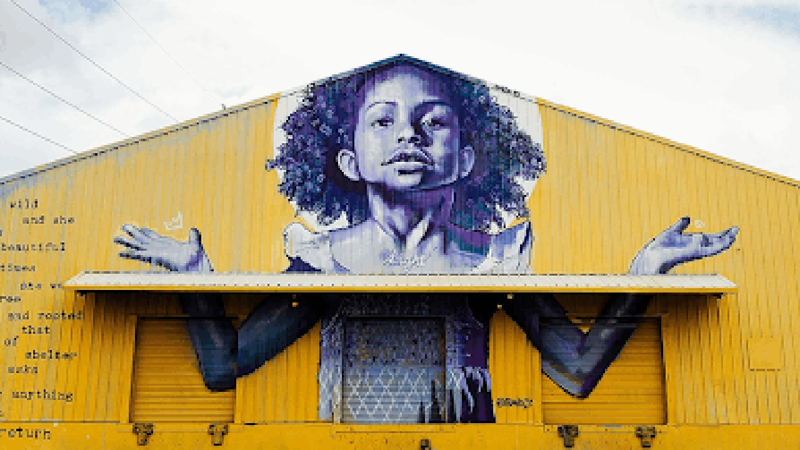
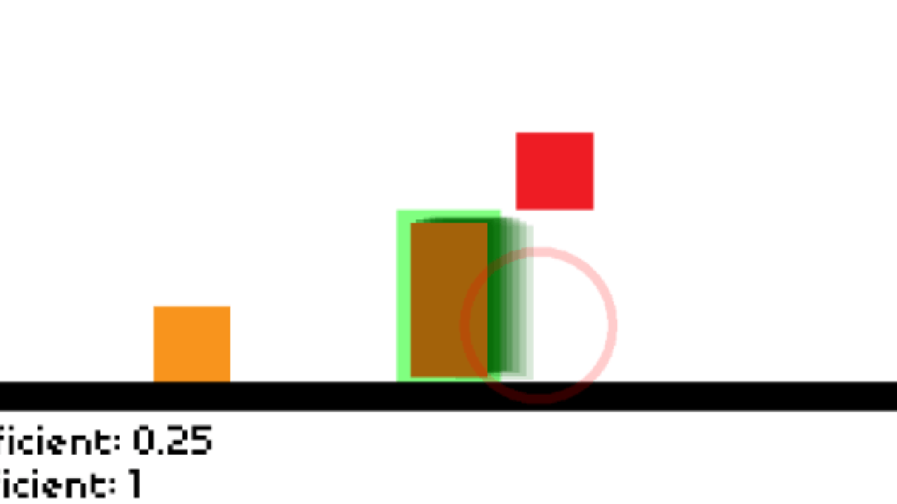
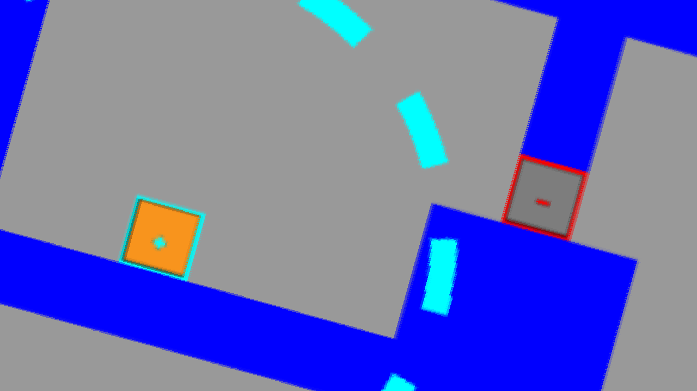
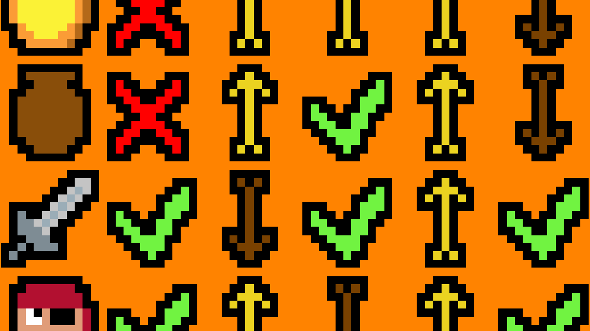
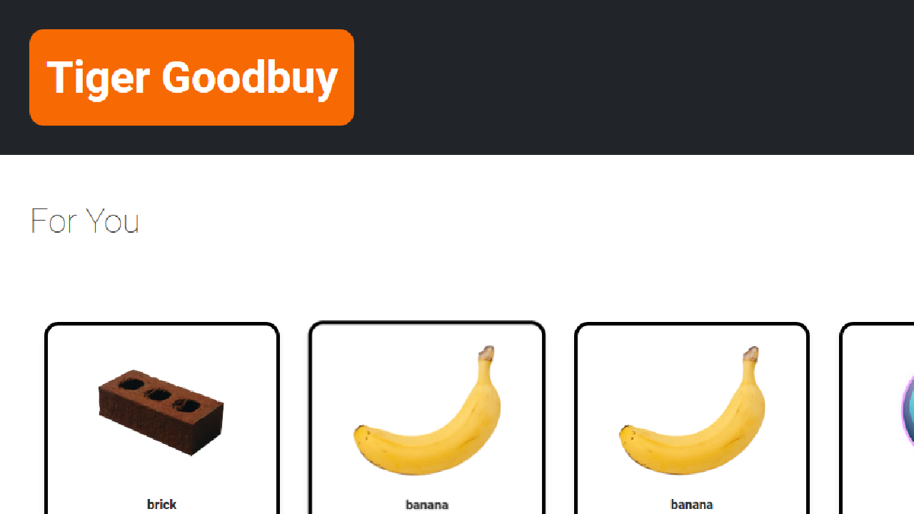
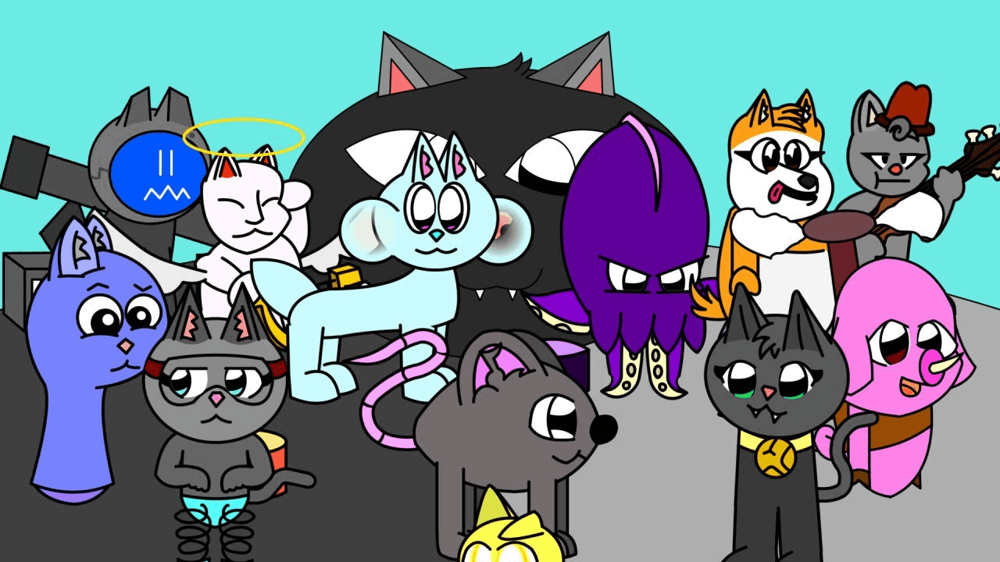
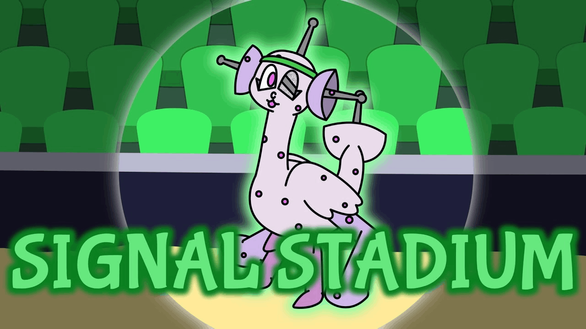

Programming
These websites display my programming abilities in HTML, CSS, JavaScript, and GameMaker Language.
American Studies - Bicolage
I created this website along with 3 of my classmates in order to tell our classmates about the history of Seneca Village.
Physics - boxPush
I created a game using GameMaker Studio for my final project in my physics mechanics class. Two opponents push a box into their goals.
Physics - Maganet
I created a game using GameMaker Studio for my final project in my physics electricity & magnetism class. Guide your magnetic character into the yellow goals.
LBALdle
This is a passion project based on Wordle, the popular word guessing game, and Luck Be a Landlord, one of my favorite video games. You are able to guess a Luck Be a Landlord symbol based on clues.
Tiger Goodbuy
A team of students and I created a prototype for a website similar to Ebay, but for RIT students.
MSM Random Monster Generator

I created a website for fans of My Singing Monsters, the hit mobile game. This site generates a random monster from the game. All of the other generators I found were outdated so I made my own!
Animation
My animations are based around the game My Singing Monsters, where various creatures use music to tell a story. I upload my animation projects to my YouTube channel, which has over 13,000 subscribers. I like to look back and see how my animation has improved over the years.
Black Cat Saga
Black Cat Island is the first animated island I have ever created, and thus, it holds a special place in my heart. Most of the monsters are based on cats.
Ameliorate Saga
I started Signal Stadium around a year after my old laptop crashed and I lost all of my intricate animation projects, including Black Cat and Grunge Glitch Island. This island helped me to get back into the flow of music and animation.
Other
For everything else!
Personal/Contact
Email: eehikioya@wightfoundation.com
Website: monstyrslayr.github.io